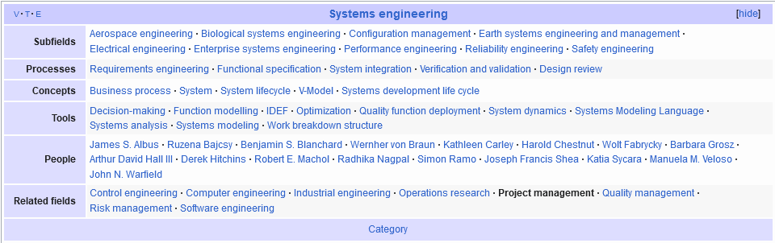

|
knowledge graph for Wikipedia(Wikidata), 墨者百科
Project management like Shortcut
|  |
|
||||||||||||||||
keyword management
tag mechanism or knowledge graph
search across files
interactive SICP
matlab live editor(.mlx file)
Group code fragement as “project”
Link to symbol from inline
Compare whole project, export compare result to .diff file or rich document.
Structural compare and Three-way merge detect
Detect movement of structure
project file
deprecate master document